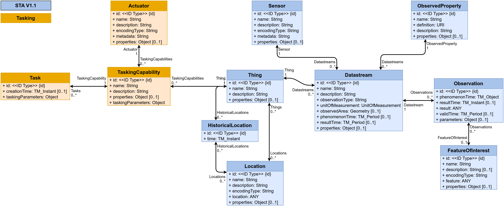
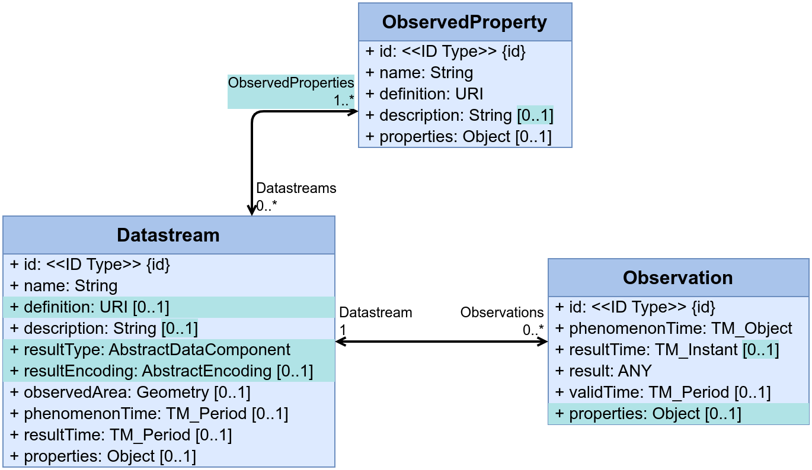

This is the 2026 Geonovum testbed sensordata report. It contains the results of Geonovum's investigation into OGC sensordata standards. This was done with market participation. Using a public tender process, five parties were selected to perform 6 implementation topics:
Fraunhofer IOSB: Hosting a SensorThingsAPI server
Collaborall: Hosting a SensorThingsAPI server and Connect sensors to SensorthingsAPI server
Clappform: Connect sensors to SensorthingsAPI server
Geoinsights: Connect sensors to SensorthingsAPI server
TUDelft: Connect sensors to SensorthingsAPI server
This report contains their detailed findings. TBD abstract of Geonovum conclusions
Status van dit document
Dit is een document zonder officiële status.
1. Introduction
This final report presents the results of the Geonovum sensor data testbed focused on the implementation and adoption of the OGC SensorThings API standard. The testbed was initiated in response to the growing importance of sensor data in the Dutch public sector, where smart cities, citizen science initiatives, environmental monitoring, and digital twin applications are generating increasing volumes of sensor observations. As these data sources become more diverse and more widely used, the need for a uniform and interoperable approach to publishing, accessing, and reusing sensor data has become more urgent.
The goal of the testbed was to stimulate the practical adoption of the OGC SensorThings API standard and to better understand the main obstacles to broader implementation. By working with market parties and public-sector use cases, Geonovum aimed to gather practical insights into how sensor data can be made more interoperable, reusable, and easier to integrate into applications and infrastructures. The longer-term ambition is to support the further development of the Dutch public sector spatial data infrastructure and to assess whether stronger standardization of sensor data exchange is desirable.
The scope of the testbed focused on the implementation of the OGC SensorThings API standard in a realistic context. A central use case was provided to support this work: the wastewater cleaning digital twin of Water Authority Brabantse Delta. In this use case, a physical test setup and existing digital infrastructure are used to support real-time process control, monitoring, and optimization of wastewater treatment. The setup includes several sensors, such as pressure and flow sensors, as well as pump-related measurements. The use case demonstrates how sensor data can support operational optimization, load balancing, predictive maintenance, and analysis in a digital twin environment.
To explore this scope, the testbed was organized around two implementation topics.
The first implementation topic focused on hosting a SensorThings API server. The goal of this topic was to establish a central server within the testbed where sensor data could be collected, stored, and made available for querying and analysis. This required the implementation of a data model capable of accommodating all participating sensors, based on the Observations, Measurements and Sampling (OMS) standard. Participants working on this topic were asked to configure and host a SensorThings API server, document the modelling and implementation approach, publicly demonstrate relevant queries, and record lessons learned. The intention was not only to create a working server, but also to generate reusable knowledge on how such an implementation can be set up generically for other use cases.
The second implementation topic focused on connecting sensors to the SensorThings API server. The goal here was to demonstrate how existing sensors can be adapted or connected so that their observations can be sent to a central SensorThings API endpoint. This topic emphasized interoperability in practice: participants were free to choose their own technical approach, such as direct connections from sensors or the use of intermediary translation layers. The tasks included connecting one or more sensors, validating the reliability of the solution, documenting a reproducible approach, publicly demonstrating the implementation, and capturing lessons learned. This topic was designed to provide insight into the practical effort and technical choices involved in exposing sensor data through a common standard.
Together, these two implementation topics addressed both sides of the interoperability challenge: the establishment of a standards-based central data service and the integration of heterogeneous real-world sensors into that service. This report brings together the findings, implementations, and lessons learned from the testbed, with the aim of informing future adoption and further development of interoperable sensor data infrastructures in the Dutch public sector.
1.1 Reading guide
The rest of this document contains the results of all three research topics, written by the participants. It ends with the Conclusion chapter, which describes the main findings and the way forward as perceived by Geonovum.
2. Topic 1 Fraunhofer
Dit onderdeel is niet-normatief.
2.1 The OGC SensorThings API
The OGC SensorThings API is an implementation Data Model of OMS, combined with a Request/Response and a Publish/Subscribe API.
It is designed to enable the management and sharing of sensor data, allowing users to approach the data in the way that fits their use case.
The API consists of a data model based on the OGC/ISO Observations and Measurements conceptual model, a REST-over-HTTP part for managing the data and accessing it using requests, and an MQTT part that enables push-notifications when data changes.
2.2 FROST-Server
FROST-Server is the reference implementation of the SensorThings API.
It is licensed using the LGPL 3.0 license and implements all parts of the spec.
It is a Java-EE application and has Docker images available for easy installation.
2.2.1 Deploying FROST-Server using Docker Compose
For this testbed a FROST-Server instance was deployed on the cloud environment of Brabandse Delta.
This cloud environment uses Portainer to manage a Docker environment, and uses NGINX as a reverse proxy to route HTTP requests to the correct docker container.
When running in a container environment, FROST-Server consists of separate containers for the HTTP and MQTT parts of the API.
These containers have to state and can be duplicated as required to satisfy the load put on the system.
The separate FROST-Server containers communicate with each other using a message bus, so that when an update is made through one container, the other containers are notified so they can send push notifications to any users that have subscriptions on the changed entities.
The data that is managed by the system is stored on a PostgreSQL database server with PostGIS extensions.
This database server writes the data to a persistent volume, which is the only part of the system that is persitent over restarts.
In a docker environment the deployment of a composite system with sub-systems is configured in a docker-compose.yaml file.
A basic docker-compose file consists of a name, a set of services and a set of persistent volumes.
The name is used as a prefix to name containers.
The volumes are the file systems that persist across restarts of the services.
The services specify which containers are generated, and which settings are used for these containers.
The basic structure of a docker-compose file for FROST-Server is shown in the following example:
Each service lists an image that is used as a basis for the containers of that service, the ports that are exposed to the outside, the persistent volumed mapped into the containers and environment variables.
A ports definition is only needed for services that need to be directly accessible from outside of the cluster.
All services in the same docker-compose file can access each other directly using the service name.
Therefore, the only service that needs a portmapping is our NGINX service.
The configuration of NGINX must be done using a confguration file, that is placed next to the docker-compose.yaml file and mapped into the appropriate place in the container, using the read-only (:ro) mode to ensure it can not be changed.
All configuration of FROST-Server is done using environment variables, listed in the environment section of the service.
There are many settings, listed in the documentation.
FROST-Server lists each configuration setting in its log files and on the console, when it first uses a setting.
The environment variables can use placeholders that in turn are defined in a separate .env file.
This is useful for values that appear multiple times in the file, or for passwords or other secrets that should not appear as literals in the file.
The bus_mqttBroker and persistence_db_url variables reference other services in the same docker-compose file by simply using the names of these services.
The entire set of services defined in the docker-compose file can be started with the single command:
docker compose -f docker-compose.yaml up
To stop all services in one go, the following command can be used:
docker compose -f docker-compose.yaml down
2.2.2 Authentication & Authorisation
When no authentication module is enabled, anyone can create, edit and delete all entities on the server.
Usually this is not desired, and thus an auth* provider should be enabled.
FROST-Server comes with two auth providers out of the box: Basic Auth and KeyCloak auth.
The Basic Auth provider uses internal user and userrole tables, that can be in the same database as the other data, or in a different database. A user uses the HTTP Basic Auth method to authenticate directly to FROST.
Users have to be added directly in the database using SQL queries.
The KeyCloak Auth provider uses an external authentication server to handle user authentication using OpenID-Connect.
To enable basic auth, the following set of enviroment variables can be added to both the frosthttp and frostmqtt services in the docker-compose file:
The MQTT API is availale over WebSockets at: wss://sta.wbd-rd.nl/mqtt
2.3 The SensorThings API Data model and extensions
The SensorThings API version 1.1 defines a core data model that is based on O&M version 2.
This core data model can easily be extended with additional classes and attributes.
2.3.1 Core Data Model
The core data model of version 1.1 of the SensorThings API consists of 9 classes, 8 relations between those classes.
The following diagram shows the UML representation of the data model:
A detailed description of each class and its properties and relations can be found in the specification: OGC 18-088.
2.3.2 Extension: Tasking
The standard tasking extension OGC 17-079r1 can be used to model Actuators, their tasking capabilities, and the task send to the actuators.
The extension adds three extra classes to the SensorThings data model, shown in the figure below in orange.

Figuur 3SensorThings API Tasking data model extension.
In FROST-Server the tasking data model extension can be enabled using the environment variable plugins_actuation_enable=true.
2.3.3 Extension: OpenCitySense
To make the complexities of sensor management more manageable, Fraunhofer IOSB started an internal research project to design the concept for a sensor management system, based on the OGC SensorThings API, and create an implementation of this system: OpenCitySense.
The main reason that sensor management is complex is that there are many different types of sensors, from many different vendors, using many different communication protocols.
The result is that a sensor management system consists of many different sub-systems, and these sub-systems all store a part of the management data of each sensor that they (partially) manage.
The management data of each sensor is thus spread out over many systems, and that makes coordination of this data and control over these subsystems problematic.
Since the SensorThings API version 1.1 is extendible by design, and already comes with several extensions, the architecture can be greatly simplified by using the SensorThings API service as the central data store for all sensor related data (figure below).
This means that all components communicate through a single service, reducing the number of interconnects between components and reducing the spread of primary information across components.
The standard tasking extension can be used to coordinate management actions between components, such as signalling to a connector that a sensor needs to be on-boarded, that a configuration needs to be changed, or that a sensor needs to be off-boarded.
The connector concept can then be extended to not just be a one-way ETL process, but to take an active role in the sensor registration process on the LoRaWAN stack.
It can receive information about new or updated sensors from the SensorThings service, and automatically take all required registration actions in the communication infrastructure.
Besides greatly simplifying the architecture, a second major advantage to using the SensorThing API service for all data storage is that it offers a consistent, powerful API for managing relational data.
This makes all data relevant for managing sensors and their data available in a unified, consistent way, and management tools or other clients do not need to implement multiple APIs and access data in multiple services.
While all publicly relevant sensor data and metadata can be stored in the core data model of the SensorThings API, internal management data can be stored in a custom data model extension.
Since this does not alter the core data model of the SensorThings API, clients implementing only the Sensing part will not be affected by this data model extension.
Sensor configuration parameters are modelled using JSON-Schema, and translated by the connector into a form that the sensor understands.
This means that regardless of sensor brand or type, the management GUI can offer a consistent interface for changing sensor settings.
2.3.3.1 Data Model
To allow the representation of device management information, a data model extension has been designed for the data models of the SensorThings API and the tasking extension.
The extended data mode is depicted in the following image.
Connectors and Devices are modelled as Things.
To make it easier to distinguish between different types of Things, a "type" field has been added to the Thing entity type that indicates the type of the thing.
Things of type "Connector" are linked to the Things of the devices they manage, through the ControlledDevices <-> ControllingConnector relation.
This makes it easy to find all the devices controlled by a certain connector, and to find the connector controlling a certain device.
Each Thing can have a DeviceModel, describing the capabilities of the Device or Connector.
A DeviceModel contains the schema for the Configurations of devices of this model, and can link to a Configuration that is the template or default configuration of devices of this model.
DeviceModels can link to a Decoder that can be used to decode and encode data coming from and sent to devices of this model.
DeviceModels link to Sensors that describe the Sensors that a device of the model has.
In turn, Sensors link to the ObservedProperties that a Sensor of this type observes.
Using these two links, a Connector knows which Datastreams to create and which Sensor and ObservedProperty to link, when onboarding a Device.
DeviceModels link to the DeviceModels of the Connectors that they are compatible with.
This allows a user interface to find the DeviceModels that work on a chosen Connector, and allows the Connector to specify additional configuration options it requires on a Device and a DeviceModel.
Configurations describe how a device can be, was or is configured.
The schema for the config is stored in the DeviceModel of the device.
The status field of a configuration indicates the current status of a sensor (Created, Active, Inactive, Removed) or if the Configuration is a Template.
Configurations have a time field that indicates when this configuration became active.
If a device has multiple configurations there must be only one configuration with status "Active".
The other configurations are historical Configurations or templates.
To allow the secure storage of passwords or API keys, the DeviceSecret class was added to the data model.
The secrets can be secured, both by only giving certain users read-access to these device secrets, and by encrypting the values of the device secrets.
To allow Encryption, a connector has a public/private key pair.
The private key of a connector is not stored in the SensorThings data model, but directly passed to the connector, usually using an environment variable.
The public key of the connector is available in the SensorThings data model and can be used by clients to encrypt passwords before storing them in a DeviceSecret entity.
This way only the connector can decrypt these secrets.
2.3.3.2 Configuration Definitions
A device generally has two types op parameters: Fixed ones that can not be changed during the operation of the device, and dynamic ones that can be changed.
The dynamic parameters are independent of the Connector used to manage the device.
These parameters are specified in the section configuration of the configDefinition attribute of the DeviceModel, and the values for these are stored in the config attribute of the active Configuration entity linked to the device.
The static parameters are (can be) connector-specific.
They are stored in the properties of the device (Thing), as secret linked to the device or in the properties of the DeviceModel.
The definition of these parameters is stored in section configuration of the configDefinition attribute of the DeviceModel of the connector.
The configDefinition of a DeviceModel may thus have three sections:
configDefinition/configuration: Definitions of fields that can be added to te Configuration of devices of this DeviceModel.
These fields should be shown when creating a new device, or when changing the configuration of a device.
configDefinition/device: Definitions of fields that the connector requires in the properties or a DeviceSecret of a Thing that it manages.
These should be shown when creating a new device.
configDefinition/deviceModel: Definitions of fields that the connector requires in the properties of a DeviceModel of devices that it manages.
These should be shown when creating a new DeviceModel, or when linking an existing DeviceModel to the DeviceModel of a Connector.
Using these schema definitions, a user interface can generate all the forms required for onboarding and managing both connectors and devices.
2.3.3.3 Onboarding Workflow
From the point of view of the User Interface the workflow for onboarding a sensor is as follows:
Sensor Manager
FROST-Server
LoRaWAN
Connector
List DeviceModels
Data
POST Thing
Links to DeviceModel
@id
POST OnboardDevice Task
POST Task(OnboardDevice, ThingID of Device)
@id
Onboard Device
Update Task: Done
Sensor Manager
FROST-Server
LoRaWAN
Connector
Assuming a suitable DeviceModel already exists for the device to be onboarded, the user interface only needs to create a Thing for the device and then create a Task for the connector to onboard the device.
Most of the work is done by the Connector, as can be seen in the workflow focusing on what the Connector does after the onboarding Task is created:
Sensor Manager
FROST-Server
LoRaWAN
Connector
LoRaWAN
Platform
LoRaWAN
Application Server
LoRaWAN
Network Server
LoRaWAN
Join Server
POST Task
OnboardDevice,
(ThingID of Device)
MQTT Push:
New Task (new Sensor with ThingID)
GET Thing(sensor)
expand=DeviceModel, Configuration
Data
Link Thing(sensor)
to Thing(Connector)
Create Datastreams
loop
[For each Sensor linked to
DeviceModel]
POST Register Sensor
(ApplicationID, DeviceID, DevEUI,
JoinEUI, JoinServerAdr,
NetworkServerAdr,
ApplicationServerAdr)
Response
POST Register Sensor
(DeviceID,DevEUI,JoinEUI)
Response
POST Register Sensor
(DeviceID, DevEUI, JoinEUI, FrequencyID, PhyVersion, LoRaWANVersion, AppKey)
Response
POST Register Sensor
(DeviceID, DevEUI, JoinEUI, AppKey, NetworkServerAdr, ApplicationServerAdr)
Response
Get DeviceModel(x)/decoder
Data
Set Up Decoder
PATCH Sensor(x)/Configuration
Active
Sensor Manager
FROST-Server
LoRaWAN
Connector
LoRaWAN
Platform
LoRaWAN
Application Server
LoRaWAN
Network Server
LoRaWAN
Join Server
2.3.4 Extension: Projects
Security is an important aspect of any API, especially when the API is use for both writing and reading.
In many cases, a simple all-or-nothing approach is sufficient, but when multiple groups of users use the same service, yet should not be able to change, or even read, each others data, a more fine-grained approach to access control is required.
FROST-Server comes with a highly-configurable fine-grained access control engine, but setting up the access-control rules can be a daunting task.
To help with setting up access rules, the Projects extension provides a data-model extension and a set of access-control rules that are sufficient for most use cases.
The finer details of the Projects extension can be found in its documentation.
2.3.4.1 Data Model
The image below shows the core STA data model in blue, with the security extension in yellow.
To be able to take user information into account when determining which actions a user can do on individual entities, the user and its roles need to be connected to the data model.
The Projects extension does this by introducing a Project entity type.
Users can have certain Roles in one or more Projects.
The other STA entities can also be connected to one or more Projects, either directly (such as Thing) or indirectly (such as Datasteam and Observation).
2.3.4.2 Access rights
User-entities can be directly linked to Role-entities, or indirectly through UserProjectRole-entities.
If a user is directly linked to a role, the user has that role on all entities of all types.
If a user is indirectly linked to a role, the user has that role only on the entities linked to the project linked to the same UserProjectRole entity.
Projects can be public or non-public.
Public projects, and their related entities, can be read by users that are not related to the project.
Non-public projects can only be read by users that have a direct role in the project.
Things, Locations, Datastreams and FeaturesOfInterest have an additional restricted flag.
If one of these entities is set to be restricted, that entity is not visible to users that are not in the project(s) that the entity is related to, even if (any of) those projects is public.
ObservedProperty entites are shared across Projects and can thus only be edited by users with global create, update or delete rights.
2.4 The SensorThings API version 2 data model
The SensorThings API version 2.0 is currently under voting at the Open Geospatial Consortium.
The data model of this new version has been updated in several ways, based on experience of almost ten years of use since the original SensorThings API version 1.0 was released in 2016.
An updated data model diagram can be found in Figuur 8, which highlights the changes.
In STA version 1.x, the ObservedProperty has an attribute called definition that is meant to point to an external, authoritative source for the ObservedProperty.
This use case, where an entity has an external, authoritative definition exists not just for ObservedProperties, but for almost all entities.
Therefore, in STA 2.0, almost all classes have a definition attribute.
2.4.2 Features, FeatureTypes and ofInterest
One of the most asked questions people have when starting to use STA is: "What should I use as Thing, and what as Feature?"
Unfortunately, for STA 1.x, there was only the pragmatic answer: "The Thing has to be that which you want to attach a time-series to."
This is because a Thing is linked to time series (Datastreams) and FeaturesOfInterest are not.
This limitation breaks the usefulness of the Feature, and made it impossible to properly use the FeatureOfInterest in the way it was intended in the conceptual O&M Model.
In the update of the OGC/ISO Observations and Measurements specification, now called Observations Measurements and Samples (OMS) the concept of Feature and its roles in relation to Observations has be clarified further.
A Feature can have multiple roles when relating to Observations:
UltimateFeatureOfInterest: The largest scale Feature that is represented by an Observation.
ProximateFeatureOfInterest: A smaller, more precise proximate for the ultimate Feature.
An example from the water domain would be that of a River, that has sampling points, where water samples are taken, on which measurements are made_
The River is the Ultimate Feature of Interest.
All measurements made on all samples taken at all sampling points ultimately say something about the water in the river.
The sampling points are Proximate Featurs of Interest.
They are a proxy for the river with a higher spatial detail.
The samples are Proximate Featurs of Interest for the sampling points.
They have a higher temporal detail and can capture processing steps made to the water before Observations are made.
The river, sampling points and samples are just Features.
They only become "ofInterest" in the context of one or more Observations.
This more detailed model has been taken over in STA 2.0 as depicted in Figuur 9:
Features are now just named Feature, and no longer FeatureOfInterest.
Features can now be directly linked to Datastreams, in the roles of Ultimate or ProximateFeatureOfInterest, and to Observations in the role of ProximateFeatureOfInterest.
The relation between Observation and Feature is now optional, since it is only relevant when the Observation was made on a sample.
Features now have one or more FeatureTypes, which makes it possible to quicky find all Features of the same type..
2.4.3 Observation Result Type
The result attribute of an Observation in STA has always been of type ANY, meaning its value can be anything.
A major problem with this is that STA version 1.x has no way to indicate what a client can expect.
It could be a number, a string, an array, or a complex json object.
In version 2.0 this has been improved as depicted in Figuur 10:

Figuur 10ResultType updates in SensorThings API v2.0.
The Datastream now has two fields, resultType and resultEncoding that use the OGC SWE-Common standard to describe the exact schema of the values of the result attribute of the Observations in a Datastream.
Because a complex Observation can involve multiple ObservedProperties, a Datastream can now be linked to multiple ObservedProperties.
The draft specification has examples of Datastreams with simple and complex resultTypes.
This change makes the MultiDatastream extension of STA 1.x obsolete, since the MultiDatastream structure can also be described by the resultType attribute.
2.5 Conclusions
Setting up a FROST-Server with the core SensorThings API data model is trivial.
The hard part is tuning the server to fit the desired use case, since there are many extension options for the data model, and ways to deal with authentication and authorisation.
Testbeds, such as this one, are a good way to gather requirements that are not directly obvious.
Also, the SensorThings API standard is a rather large and complex standard, since the domain of observational data publishing itself is quite complex.
A testbed is a good way for people to experiment, discover limitations, and discuss solutions that others may already have found.
During the testbed many questions were asked and answered.
In quite a few cases (#3, #12, #14) the underlying problem of the question was already recognised by the standards working group, and fixed in version 2.0 of the SensorThings API that is currently under vote, or in a proposed extension.
3. Topic 1: Hosting a SensorThings API server (Collaborall)
Dit onderdeel is niet-normatief.
3.1 Content
This chapter describes the work Collaborall carried out for implementation
topic #1 of the Geonovum Testbed Sensordata 2026: hosting a central OGC
SensorThings API server. Part of the work is a from-scratch open-source
server implementation, which is available on:
In summary: Collaborall built and hosts a clean-room OGC SensorThings
API v1.1 server — written directly against the OGC 15-078r6
specification as a PHP / Laravel package on PostgreSQL with TimescaleDB
and PostGIS — rather than deploying an existing implementation. The
server ran throughout the testbed, ingested roughly sixteen million
observations from real and simulated sensors during development, was
exercised by other testbed participants against their own tooling, and
surfaced a series of interoperability findings that only cross-testing
between independent implementations of the standard can reveal.
3.2 Scope
Many public-sector organisations in the Netherlands operate sensors
whose data ends up in vendor-specific silos. The testbed investigates
whether the OGC SensorThings API can serve as the single, standardised
interface for publishing and consuming sensor data. Topic 1 asks a
participant to host a central SensorThings API server that all testbed
sensors can publish to and that any standards-aware client can query.
3.3 Goal
Host a server implementing the latest OGC SensorThings API (v1.1).
Offer an OMS-based data model that accommodates all sensors used in
the testbed, regardless of vendor or protocol.
Make the deployment reproducible by third parties.
Demonstrate use-case relevant queries against the live server.
Record lessons learned about the standard itself.
3.4 Approach
We built and host our own SensorThings API server — a PHP / Laravel
package on PostgreSQL with TimescaleDB (observations hypertable) and
PostGIS (spatial queries) — rather than deploying an existing
implementation. This was a deliberate choice: the testbed's "maximal
learning" objective is served better by an additional, independent
implementation of the standard than by another FROST deployment, and it
surfaced a series of interoperability findings that a
single-implementation ecosystem would never encounter (see Lessons
learned).
The deployment consists of three components:
sta-server — a composer-installable Laravel 12 package
implementing the STA v1.1 core, a minimal Tasking subset
(OGC 17-079r1), and the RQ3 / OpenCitySense device-management
extension.
Host application — a thin Laravel host with an opinionated
PHP-FPM + nginx Docker layout; PostgreSQL 16 with the TimescaleDB and
PostGIS extensions.
Admin/demo portal — a Vue 3 single-page application for device
onboarding, data browsing, and server management, speaking plain STA
REST to the server.
3.4.1 Data model (OMS)
The STA v1.1 entity model is itself an encoding of OGC
Observations, Measurements and Samples: Things, Sensors,
ObservedProperties, Datastreams, Observations and FeaturesOfInterest map
one-to-one onto OMS concepts. The server implements this model with a
few points worth noting:
Observation types — Datastreams carry their OMS observationType
(OM_Measurement, OM_TruthObservation, OM_CountObservation, …)
as OGC-defined URIs, and observation result values are validated
against the declared type.
Unitless streams — for Datastreams without a unit of measurement
(e.g. OM_TruthObservation for passive-infrared detectors) the
unitOfMeasurement sub-keys are null, exactly as the specification
mandates. Our validation was initially stricter than the standard
here; see Lessons learned.
FeatureOfInterest resolution — when an Observation arrives
without an explicit FeatureOfInterest, the server auto-resolves it
from the Thing's Location per the specification.
Time-series storage — Observations live in a TimescaleDB
hypertable partitioned on phenomenonTime, which keeps large
time-range queries fast without deviating from the STA query
interface. phenomenonTime supports both instants and ISO 8601
intervals.
3.4.2 A note on the object-context ambition
Our proposal envisioned linking the OMS FeatureOfInterest to a
hierarchical System Breakdown Structure with IFC-based object
definitions managed in ANT CDE. During the testbed we deliberately
shifted that depth toward the ingest side: full MQTT support (both
server-side publish and connector subscriptions) and a multi-protocol
connector programme (HTTP, MQTT, Modbus, LoRaWAN via KPN Things) —
capabilities the tender lists as optional but which proved to be where
the interoperability lessons are. The ANT platform is capable of the
sensor-to-object mapping — the path would link each FeatureOfInterest
to an object node in the ANT CDE breakdown structure, so observations
inherit the asset context (which pump, which bridge deck) of the object
they measure — but we have not built or tested that path within the
testbed, and we report it here as future work rather than a delivered
feature.
3.5 Implementation
The server implements the eight STA v1.1 core entity sets (Things,
Locations, HistoricalLocations, Sensors, ObservedProperties,
Datastreams, Observations, FeaturesOfInterest) with full CRUD, deep
resource paths (/Datastreams(1)/Observations, including POST via
navigation paths) and address-to-associated-entity navigation. OData
query options are supported on every collection: $filter (comparison,
logical, arithmetic, string and spatial functions, and phenomenonTime
interval literals), $expand with nested $select / $orderby /
$count, $select, $orderby, $top / $skip / $count. Errors are
returned in OGC error envelopes.
On top of the core the server ships:
MQTT publish — entity changes and Task creation are published on
the STA MQTT extension topic shapes (v1.1/Tasks/{capabilityId}), so
connectors react without polling.
Tasking subset (OGC 17-079r1) — TaskingCapabilities and Tasks.
RQ3 / OpenCitySense device-management extension — DeviceModels,
Configurations, DeviceSecrets (stored encrypted; the server holds
ciphertext only) and the ControllingConnector / ControlledDevices
relation on Things, following the OpenCitySense naming one-to-one so
interoperability with FROST-PLUS deployments stays straightforward.
Authentication — Laravel Sanctum bearer tokens with sta.read /
sta.write abilities checked on every route.
Built-in conformance runner — asynchronous self-test runs
triggerable over HTTP (/v1.1/conformance/runs), used during
development to track spec coverage.
Quality evidence: the package carries 925+ Pest tests running against a
real PostgreSQL + TimescaleDB + PostGIS instance (no mocks), static
analysis at PHPStan level max, and formatting/refactoring gates in CI.
Time series — last observations of a datastream, newest first:
GET /v1.1/Datastreams(1)/Observations?$orderby=phenomenonTime desc&$top=100
Threshold — observations above a limit in a time window:
GET /v1.1/Observations?$filter=result gt 20 and phenomenonTime ge 2026-07-01T00:00:00Z&$orderby=phenomenonTime desc
Cross-sensor — all datastreams with their sensor and observed
property in one call:
GET /v1.1/Datastreams?$expand=Sensor($select=name),ObservedProperty($select=name,definition)
Spatial — things located within an area:
GET /v1.1/Locations?$filter=st_within(location, geography'POLYGON ((4.3 51.9, 4.5 51.9, 4.5 52.1, 4.3 52.1, 4.3 51.9))')
Navigation — a thing with its datastreams and latest observation:
GET /v1.1/Things?$expand=Datastreams($expand=Observations($orderby=phenomenonTime desc;$top=1))
Interoperability with other implementations was validated with the
other testbed connectors and participants publishing to and querying
this server, as agreed with Geonovum; the findings are publicly
documented in
discussion #10.
3.7 Reproducibility
The server is a standard composer package: composer require collaborall/testbed-sensordata-server, publish the config, run the
migrations and php artisan sta:install. A self-contained development
environment boots with a single docker compose up -d (PostgreSQL 16 +
TimescaleDB + PostGIS). The repository README documents the full
quick-start, configuration surface and auth bootstrap. A clean-room
installation from the public documentation alone was executed
successfully as part of the delivery.
3.8 Lessons learned
Detailed engineering notes live in the repository
(docs/lessons-learned.md, ADRs). Reported here are our observations
on the standard itself, from the perspective of a party that wrote
an independent implementation of it from the specification:
The standard has no notion of origin or ownership. A Thing is
only a name, a description and a free-form properties map; nothing in
the protocol records which connector or party produced a Datastream
or Observation. For an operator managing many servers and connectors
at once, "where did this data come from?" is not answerable inside
the standard — devices and datastreams can exist as untraceable
orphans. The RQ3 / OpenCitySense ControllingConnector relation
fills the gap, but as an optional extension: enforcing it would make
a server reject spec-conformant entities. We consider provenance a
first-class concern the standard should address. Raised and discussed
with the testbed community in
discussion #16.
The spec constrains objects, not sub-keys — implementers
over-validate. OGC 18-088 makes unitOfMeasurement mandatory as an
object but attaches no cardinality to its sub-keys, and explicitly
requires null values for unitless streams. Our initial validation
required all three sub-keys as strings — stricter than the standard
and a violation of the SHALL for truth-observation streams. The
general rule we distilled: enforce what the multiplicity column and
SHALL/SHOULD notes state; do not invent presence requirements the
standard leaves open.
Value lists are open, not closed enums. The observationType
URIs read like an enumeration but are not one; FROST accepts informal
values where we initially required exact OGC URIs. Where the spec is
silent, matching the de-facto behaviour of the reference
implementation maximises interoperability — which also means the
reference implementation's behaviour has quietly become part of the
standard.
Independent implementations are what make it a standard. The
SensorThings API has had several implementations over the years —
FROST, 52°North's sensorweb-server-sta, GOST, and closed-source
offerings from CubeWerx and SensorUp among them — so ours is by no
means the second implementation of the standard as such. Within this
testbed, however, FROST was the only server in use, and cross-testing
our server against participants' FROST-based tooling surfaced corner
cases a single-implementation ecosystem never hits: nested $select with
@iot.id, string-function argument order (substringof),
phenomenonTime interval literals in $filter, POST via navigation
paths, and entity discovery from the capabilities document. All were
reported, discussed and fixed in the open in
discussion #10.
3.9 Availability and licensing
The server, portal and data remain publicly available until at least
January 2027. The server implementation is open source under
Apache 2.0; this report and all documentation deliverables are
published under CC-BY 4.0. The ANT demo environment is provisioned
for testbed participants until the end of 2026.
Demo environment for participants (12 named users)
Yes
Provisioned until end 2026
Synergy: bi-weekly meetings, open sessions, closing event
Yes
Bi-weekly meetings attended (11:00 on 22-05, 05-06, 19-06, 03-07, 17-07 and 31-07-2026)
Dissemination: Geonovum repo report, DMI PDX, Best Practice Explorer, blog/LinkedIn
Partially at delivery
This report; invitation to the final public session is sent to participants in August 2026
4. Topic 2: Connecting sensors to a SensorThings API server (Collaborall)
Dit onderdeel is niet-normatief.
4.1 Content
This chapter describes the work Collaborall carried out for implementation
topic #2 of the Geonovum Testbed Sensordata 2026: connecting existing
sensors to a central OGC SensorThings API server through an intermediary
translation solution. The solution is available on:
In summary: Collaborall built sta-connector, an open-source,
server-agnostic Python service that ingests observations from
heterogeneous sensor protocols — HTTP, MQTT, Modbus TCP and LoRaWAN via
KPN Things — normalises them to OMS Observations and publishes them to
any OGC SensorThings API v1.1 server over HTTP or MQTT. The connector
ran continuously against our central STA server during the testbed and
also acts as the RQ3 / OpenCitySense control-plane party for remote
device onboarding.
4.2 Scope
Public-sector organisations operate many different sensors — different
vendors, different protocols, different payload formats — and most of
them cannot speak SensorThings natively. Topic 2 asks a participant to
connect one or more existing sensors to a central STA server through an
intermediary translation solution, so that heterogeneous sensors become
available behind one interoperable standard.
4.3 Goal
Connect existing sensors of different protocols to a central OGC
SensorThings API server.
Validate that observations arrive accurately and reliably.
Document the solution so a third party can reproduce it and onboard
a new source.
Provide a continuously available public demonstration.
Record lessons learned about the standard itself.
4.4 Approach
We built sta-connector: an on-premise Python ingest-and-tasking
satellite that receives observations from heterogeneous sources, runs them
through a configuration-driven transform pipeline, and publishes them to
any OGC-conformant SensorThings API server. The connector is deliberately
server-agnostic: it talks pure OGC STA and has been exercised against our
own sta-server implementation.
Where our proposal emphasised BIM object-context enrichment, the delivered
connector emphasises protocol breadth and transform generality: HTTP
webhooks, MQTT subscriptions, Modbus polling and LoRaWAN devices via KPN
Things, with a node-graph transform pipeline (byte decoding, unpacking,
unit normalisation) authored in the portal and executed by the connector.
We consider this a strength for the testbed's diversity goal — it answers
"how do you get any existing sensor into STA" rather than one vertical.
The ANT platform is capable of the sensor-to-object (FeatureOfInterest)
mapping our proposal described, but that path was not built or tested
within the testbed and is reported as future work.
Architecturally, each configured source has its own asynchronous
pipeline — ingest → validate → normalise → batch → publish — and the
pipeline is identical regardless of the wire protocol on either end:
switching a source from HTTP-in/HTTP-out to MQTT-in/MQTT-out is
configuration, not code. Around the data plane sit a local admin API
(bearer token + optional mutual TLS) through which the portal manages
sources, a Prometheus metrics and health surface, a bounded quarantine
for rejected payloads, and a tasking subscriber that listens on
v1.1/Tasks/+ (with a polling fallback) and executes the four RQ3
device-management task types (OnboardDevice, OffboardDevice,
UpdateConfiguration, RotateSecret). The connector holds a libsodium
keypair and is the only party able to decrypt the DeviceSecrets the
server stores as ciphertext. It is designed for a customer's trusted
network with outbound traffic only — no inbound firewall holes.
4.4.1 Sources connected
Source
Protocol into the connector
Payload handling
Dragino LHT52 temperature/humidity (real LoRaWAN hardware) via KPN Things
HTTP webhook (raw SenML) and MQTT
SenML decode → transform graph → OMS Observation
Pump pressure (test fleet)
MQTT subscription on the sensor-side broker
JSON decode, unit normalisation
Pump (simulator, test fleet)
Modbus TCP polling (holding registers)
Word/byte-order decode → scaling transform
Pressure / flow (test fleet)
HTTP push
JSON decode, range validation
The originally proposed Brabantse Delta / Node-RED source was not
implemented; as agreed with Geonovum, connectivity was validated with
the other sources and testbed connectors instead.
4.4.2 Configuration model
A source is fully described in YAML: its ingest protocol and parameters,
its transform, its target datastream and its egress protocol. Defaults
(batching, retry schedule) live once and are overridable per source.
Secrets never live in YAML — the configuration only names environment
variables. Transform graphs (byte decoding, unpacking, unit
normalisation) are authored in the portal and executed by the connector.
Sources can also be provisioned at runtime through the admin API, which
is how the portal onboards a new source without YAML edits. The
repository ships an annotated example configuration
(config/connector.example.yaml) that doubles as the template for a new
source.
4.5 Validation of accuracy and reliability
Validation took place through sustained operation and open community
testing rather than a one-off measurement campaign. During development
and operation roughly sixteen million observations were ingested
end-to-end (sensor → connector → server), from real hardware (Dragino
LoRaWAN via KPN Things, Netatmo and Milesight devices used by testbed
participants) and the simulated test fleet. All accuracy and
interoperability issues found — by us and by other participants — were
reported, discussed and fixed in the open in
discussion #10,
which serves as the public record of the validation.
Reliability is designed in rather than bolted on: observations are
validated and normalised before publishing, batched with
exponential-backoff retry on network failures, and rejected payloads land
in an inspectable quarantine instead of being silently dropped. Shutdown
drains in-flight observations rather than cancelling them, a property
pinned down by an integration test. The connector distinguishes between
upstream unreachability (retried) and payload rejection (quarantined), so
no failure mode loses data silently.
4.6 Reproducibility
The repository README documents the full quick-start: install
dependencies with uv sync, point CONNECTOR_CONFIG at a YAML file, set
the bearer token and run. A fully self-contained demo — bundled Mosquitto
broker, the connector, two fake sensors and a subscriber — boots with a
single make demo-up. Onboarding a new source requires copying a source
block in the example YAML or one call to the admin API. A clean-room
installation from the public documentation alone was executed
successfully as part of the delivery.
4.7 Public demonstration
The live demonstration at https://sta-connector.collaborall.net shows
the connector feeding the central STA server: a visitor sees the
connected sources, their health, and observations arriving in the data
browser as they flow from the sensors through the connector into
https://sta-server.collaborall.net/v1.1/. Every observation is
traceable to the source and connector that produced it via the RQ3
ControllingConnector relation. The demonstration remains available
until at least January 2027.
4.8 Lessons learned
Detailed engineering notes live in the repository
(docs/lessons-learned.md, ADRs). Reported here are our observations on
the standard itself, from the perspective of the party operating the
translation layer:
Origin and ownership are invisible to the standard. Once the
connector has published an Observation, nothing in core STA records
that this connector produced it, which transform decoded it, or which
party owns the source. From a client perspective this is our main
worry about operating STA at scale: managing many servers and many
connectors at once requires answering "where did this data come from?"
end to end — for debugging, for deduplication, and for cleaning up
orphaned sources — and the protocol offers no first-class way to do
so. The RQ3 / OpenCitySense ControllingConnector relation is a
workable extension, but it is optional and unenforceable without
breaking spec conformance. We raised this with the testbed community
in discussion #16
and recommend the standard treat provenance as a first-class concept.
The MQTT extension's topic grammar and MQTT wildcards don't
align. STA topics put the entity id inside one level
(Datastreams(7)/Observations), so a subscriber cannot use + to
fan out over ids within that shape — + matches a whole level, not a
substring. Subscription patterns therefore end up broader than the
publish grammar suggests, which the standard could acknowledge.
Tasking over MQTT needs a polling fallback. The
publish-on-POST /Tasks pattern is elegant, but a broker outage would
otherwise silently stall device onboarding; the standard is silent on
delivery guarantees. Our connector falls back to polling
GET /Tasks?$filter=status eq 'pending' — onboarding still works,
with higher latency.
Heterogeneity lives entirely on the ingest side. The STA-facing
half of the connector is small and uniform; nearly all effort went
into the sensor-facing half (payload formats, byte orders, broker
behaviours, platform envelopes — KPN Things delivering raw SenML and
platform-enveloped payloads for the same device). This is an argument
for the standard: once data is in STA shape, every downstream
consumer is identical. The translation problem is real but it only has
to be solved once, at the edge.
4.9 Availability and licensing
The connector and demo remain publicly available until at least January
2027. The connector is open source under Apache 2.0; this report
and all documentation deliverables are published under CC-BY 4.0.
Synergy: bi-weekly meetings, open sessions, closing event
Yes
Bi-weekly meetings attended (11:00 on 22-05, 05-06, 19-06, 03-07, 17-07 and 31-07-2026)
Dissemination: Geonovum repo report, DMI PDX, Best Practice Explorer, blog/LinkedIn
Partially at delivery
This report; invitation to the final public session is sent to participants in August 2026
5. Topic 2 Geoinsights
Dit onderdeel is niet-normatief.
6. Topic 2 Clappform
Dit onderdeel is niet-normatief.
7. Topic 2 TUDelft
Dit onderdeel is niet-normatief.
8. Conclusion
to be filled in later
8.1 Future work
to be filled in later
9. Conformiteit
Naast onderdelen die als niet-normatief gemarkeerd zijn, zijn ook alle diagrammen, voorbeelden, en noten in dit document niet-normatief. Verder is alles in dit document normatief.